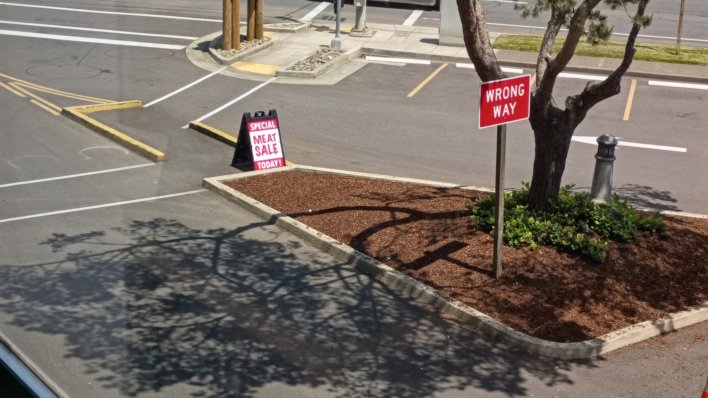

ope...a life ope.1
April Fool: Trump is President. Billionaires exist. Capitalism is considered a viable economic theory.
Feeling an overwhelming surge of optimism in my life. Don't much care for it. Means I'll have to do stuff.
Spiders.
Friggin' spiders.
Lots of spiders make their way into the house.
Like, lots.
It'd gotten so bad I'd find spiders in my bathroom daily.
And not the cute little spider buddies with webs in a corner that eat pests and want you to leave them alone. Nope. These spiders were quick and mean - oh so mean! - and scurried all over the place. They looked like wolf spiders, but they were black.
Are there even black wolf spiders?
And mean. Did I already mention mean? Don't think a spider can be mean? One morning I woke up and blearily made my way to the banister overlooking the stairs so I could tell my wife and kitty i love them. As my hand brushed the railing it bumped something. It barely registered. I was still mostly asleep. I thought to myself, wouldn't it be funny if that was a spider, then yelled down, "Love you!" to my girls. I turned, shuffled my way down the hall, and went into the bathroom.
I took off my PJs and sat on the toilet, and as I sat there, trying to wake up, I saw this black spider crawl under the door, turn toward me, then run - yes, run - right at me.
Little fucker. I'm naked on the toilet and your come at me when I haven't even had my morning coffee?
Fuck off with that shit.
I grabbed a roll of toilet paper - the only thing at hand - and sent it to its eight-legged maker.
Shit.
And these spiders? Whatever kind they are? They don't seem to spin webs. In fact, I've only seen them use spider silk once.
It was just the other day.
You see, nowadays, we have a guy come out and spray chemicals all over the inside and outside of the house.
Chemical warfare! Science! Opposable thumbs, bitches!
This guy comes out every couple of months. But that last few weeks before the guy comes out again? The spiders start coming 'round.
But now? Now I'm prepared.
So, spider silk. Right. Just the other day, I was using the bathroom facilities. I finished my business, stood up, spun the toilet paper roll, and out shot a spider.
It was waiting for me in the damned toilet paper roll.
Mother. Fucker.
But like I said, now? Now I'm prepared. Oh yes, now that I know that these spiders come back a week or two before the chemical warfare guy comes once again to spray chemical arachnid death, I make sure I have a book at hand.
A nice, thick, hardcover book with a dust jacket that cleans off easily after morte di ragno.
I'm a librarian, fuckers! I ain't never running out of books to squash y'all with!
So the spider popped out the cardboard toilet paper roll and went down it's little silk lifeline to the floor. It ran toward a piece of trim it could scuttle under.
Bam!
Down came Stephen King's Misery to end its miserable little life.
There may be lots of spiders, but every time Misery comes out? There's one less.
Kakistocracy: (Wikipedia, Merrriam-Webster)
A kakistocracy (/ˌkækɪˈstɒkrəsi/ KAK-ist-OK-rə-see) is a government run by the worst, least qualified, or most unscrupulous citizens. The word was coined as early as the 17th century, and is derived from two Greek words, kákistos (κάκιστος, 'worst') and krátos (κράτος, 'rule'), with a literal meaning of 'government by the worst people.'
Waiting for a steak sandwich.
Darnit.
Stacy has gone back to her Minnesota roots; she's started watching hockey. It's wonderful watching her watch games - she yells at the players, telling them what they should be doing (or should have done), and enjoys the fights.
I don't know much about hockey, but Stacy has been teaching me. I'm kinda hopeless with it. I keep comparing NHL players to babies: they're totes adorbs, they group hug for celebrations, chew their mouth guards like pacifiers, and every once in a while they throw a big tantrum and get put in a timeout.
Oh, and every time an announcer states that the players need a change? I giggle.
A neon sign that switches from "open" when open to "ope" when closed.
Ever get the feeling your mind isn't on your side?
It's 10pm, do you know where your children are?
PG
C.L.A.W.S. - Cat Lovers Against White Supremacy

Yes to this: What "Normal" Looks Like.
Not to pick on this person, it’s a funny protest sign — but it seems like a lot of people are thinking like we’re in a “one weird trick” (impeachment) scenario and, once we get that done, we’ll magically return to some type of “normal” and we can all go home… but the concept of normality is doing some heavy lifting here.
It's normal for minimum wage to stay the same for decades.
It's normal that people earning low wages must work multiple jobs and often still qualify for food stamps.
It's normal that billionaires exist when low-paid workers have to decide between the power bill and paying the rent.
It's normal that disabled people effectively cannot marry, since they'll often lose access to government support.
It's normal to use prisoners as slave labor (or close enough to it with hourly "wages" of pennies).
It's normal that immigrants from some countries must wait decades to become citizens because of arbitrary caps.
It's normal to let immigrants get paid less and treated worse in tech jobs because they're trapped by H1B visa requirements.
It's normal that *everyone* in America is to some extent trapped in their job because healthcare is ruinously expensive.
It's normal that Americans die of preventable disease for lack of money.
It's normal that women don't get to choose what medical treatment they receive if they are pregnant.
It's normal to address gun violence by blaming mental health but not increasing funding to expand access.
It's normal to "solve" homelessness by throwing away all of someone's worldly possessions and putting them on a one-way bus out of town.
It's normal that kids go hungry at lunch.
It's normal that Puerto Ricans and people from D.C. are denied congressional representation.
It's normal that 70- and 80-year-olds hold most of the political power in the country, and people under 40 very little.
It's normal to hand over all our personal data to megacorporations who run extensive systems of surveillance that they share with law enforcement.
It's normal that the government spies on its own citizens.
It's normal that hundreds of people die in car crashes daily.
It's normal that our spaces are built for cars, not people, and driving is often the only way to get around.
It's normal that the US government doesn’t honor its treaties with Tribes.
It's normal that we supply Israel with funding while they enact genocide.
It's normal that our water rights system is so terrible, and our water use so excessive, that the Colorado River no longer reaches the Gulf of California.
It's normal that downstream communities must bear the health burdens and costs of upstream industrial polluters.
I'll add: it's normal to vote for the least worst candidate, but the above (and below) is what you get after decade upon decade upon decade of voting for the least worst candidate.
Wrong way. Special Today! Meat Sale.
